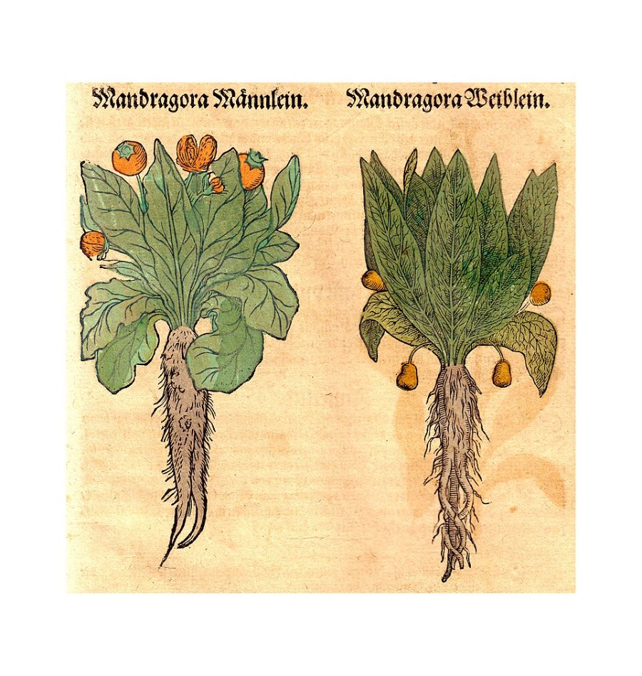
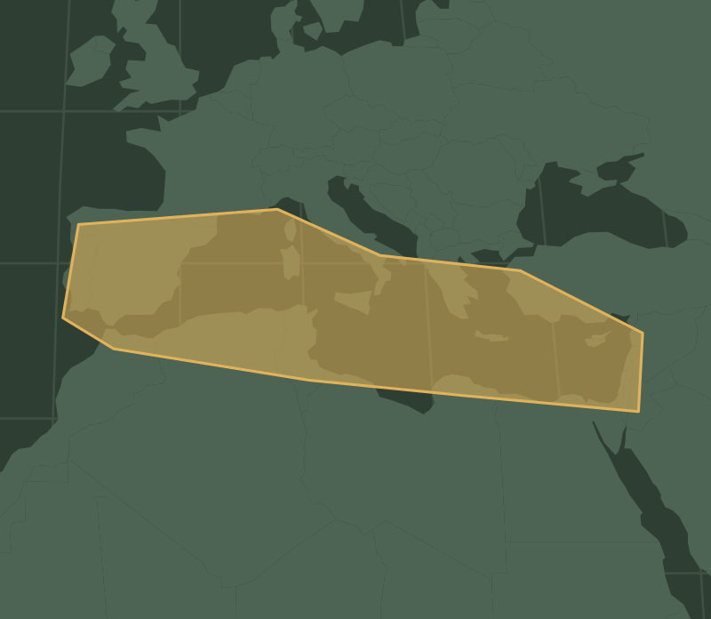

Planta · Solanáceas · Mediterráneo y Oriente Próximo
Mandrágora
Mandragora officinarum L.
Una hierba mediterránea de raíz gruesa que recuerda a una figura humana y que, por eso, cargó con siglos de mitos. Contiene alcaloides tropánicos muy peligrosos, los mismos que dieron fama de anestésico y de planta de brujas a la mandrágora.1235
También se llamamandrágora · mandrake · manzana del diablo · planta de Circe · abu'l-ruh

- Qué es
- Hierba perenne de hojas en roseta y raíz gruesa
- Territorio
- Zonas secas del Mediterráneo y del Levante
- Parte usada
- La raíz; toda la planta es tóxica
- Principios activos
- Escopolamina, hiosciamina y atropina
- Empieza y dura
- Sin datos fiables
- Quién guarda su memoria
- Medicina y folclore del Mediterráneo y de Europa
Botánica
Una roseta de hojas y una raíz que parece un cuerpo
Es una hierba perenne que crece en zonas secas del Mediterráneo y del Levante. Tiene una raíz gruesa, con forma de chirivía, y hojas de un verde oscuro que forman una roseta plana a ras del suelo.25
Las raíces, a menudo ramificadas, recuerdan a veces a una figura humana. De esa semejanza nació buena parte de su folclore.25
- Familia
- Solanaceae
- Ciclo
- Perenne
- Hoja
- Ovalada, en roseta
- Raíz
- Gruesa, a veces con forma humana
Memoria y tradición
La raíz que gritaba al arrancarla
La mandrágora aparece en escritos cuneiformes de Oriente Próximo del siglo XIV a. C. y es una de las plantas medicinales más famosas de la historia.14 Se usó durante siglos como anestésico para el dolor, como ayuda para dormir y para la fertilidad.13
En el siglo I, Dioscórides recogió la forma humana de la raíz y su uso como anestésico en operaciones como la amputación.3 En el siglo XV, la «doctrina de las signaturas» creyó que una planta con forma de cuerpo humano curaba el cuerpo.3
El folclore la unió a la brujería: se cuenta que en 1431 una mujer fue acusada en su juicio de llevar una raíz de mandrágora como prueba de hechicería, y se decía que crecía bajo las horcas.3
En el tiempo
Aparece en escritos cuneiformes de Oriente Próximo.4
Dioscórides la describe como anestésico quirúrgico.3
La doctrina de las signaturas refuerza su fama por la forma humana de la raíz.3
Una mujer es acusada en su juicio de llevar una raíz de mandrágora.3
Se sigue usando en medicina popular, y sus alcaloides, aislados, mantienen un papel en la medicina.1
Sus nombres
- mandrágora
- del latín mandragora, que nada tiene que ver con «hombre» ni con «dragón»
- abu'l-ruh
- en árabe antiguo, «el dueño del aliento de vida»
- manzana del diablo
- por su fruto y su fama
- planta de Circe
- por la hechicera de la mitología griega
El nombre inglés mandrake se presta a una falsa etimología, de «man» y «drake»; la palabra clásica no viene de ahí.5
Territorio y cuidado
Una planta de tierras secas

Qué ayuda
- No recoger ni consumir raíces de plantas silvestres de este grupo.
- Respetar la mandrágora como planta de historia y de cuento, no como medicina casera.
- Dejar a los herbarios y a los museos su valor histórico.
Qué contiene
Tropanos que bloquean la acetilcolina
Contiene escopolamina, hiosciamina y atropina, alcaloides tropánicos que bloquean los receptores de acetilcolina en las sinapsis nerviosas.25
Por eso se la considera extremadamente peligrosa. Sus alcaloides pueden causar delirio y alucinaciones.25 Aislados y modificados, los alcaloides de esta familia siguen teniendo un papel en la medicina actual.1
Produce delirio, confusión y pérdida de memoria.[2][5]
Alcaloide de varias solanáceas tóxicas, entre ellas la mandrágora.[1][5]
La experiencia
Un delirio, no una visión
Como las demás solanáceas con tropanos, produce delirio y alucinaciones, y no una experiencia lúcida.5
En la historia se usó para dormir y adormecer el dolor, pero pero su uso médico fue decayendo con el tiempo.1
Esquema orientativo: cambia con la preparación, la cantidad y la persona.
Investigación
Qué se ha estudiado
Lo estudiado es su historia: una revisión de la etnobotánica y de los herbarios sigue su uso médico desde la Antigüedad.1
Sus alcaloides, ya aislados, se han estudiado a fondo, pero la planta cruda no tiene estudios clínicos.
Alcance de estos datosSu valor es histórico y cultural. No hay evidencia que respalde usar la raíz como medicina, y su fama como anestésico es antigua, no moderna.
Con cuidado
Lo que conviene saber antes
Se la considera extremadamente peligrosa por sus tropanos.2
Se comportan como los de la datura: delirio, pérdida de contacto con la realidad y casi nada de recuerdo.25
Llama a urgencias: en España, el 112. Es una emergencia médica.
Para seguir
Libros y medicinas emparentadas
Fuentes
De dónde sale cada dato
- Benítez G, Leonti M, Böck B, Vulfsons S, Dafni A. The rise and fall of mandrake in medicine. J Ethnopharmacol. 2022 (PMID 36395976).
- University of Oxford Botanic Garden and Herbaria. Plants 400: Mandragora (Mandrake). herbaria.plants.ox.ac.uk.
- Wellcome Collection. Mandrake: medicine and myths. wellcomecollection.org.
- USDA Forest Service. Mandrake, Abu'l-ruh, Satan's apple (Mandragora spp.). Ethnobotany. fs.usda.gov/wildflowers.
- Wikipedia. «Mandragora officinarum». en.wikipedia.org (consultada el 24-11-2026).
- Taylor & Francis. Mandragora officinarum. taylorandfrancis.com/knowledge.
- Mandrágora en el herbario de Bock, siglo XVI. Autor desconocido · dominio público
- Mapa APDER, con datos de Natural Earth · dominio público
- Dibujos de moléculas APDER
Última revisión: 24 de noviembre de 2026. Si ves un error, escríbenos a info@apder.org.